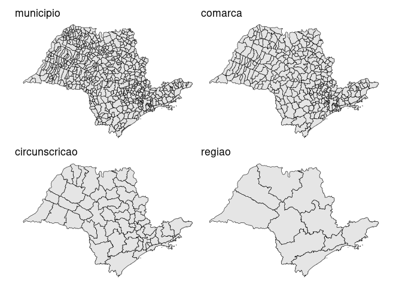
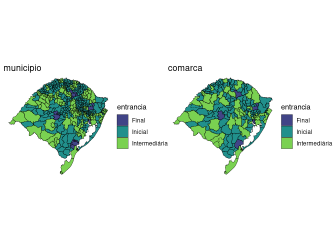

Visão geral
O objetivo do {abjMaps} é possibilitar a criação de mapas jurimétricos utilizando-se de recursos do pacote sf (contém ferramentas para armazenamento e acesso de características geográficas).
Para enriquecer a análise, são incluídos dados relativos aos estados, municípios e comarcas do Brasil. Até o momento, estão implementadas as bases para o TJSP e o TJRS.
Veja o arquivo data-raw/comarcas_tjsp.R para ver como organizamos nossos dados.
Para instalar
Você pode instalar a versão mais recente do {abjMaps} com:
# install.packages("remotes")
remotes::install_github("abjur/abjMaps")Como usar
Para ilustrar, segue-se exemplos de uso:
Tribunal de Justiça de São Paulo:
library(abjMaps)
library(sf)
#> Linking to GEOS 3.8.0, GDAL 3.0.4, PROJ 6.3.1
d_sf_tjsp
#> # A tibble: 4 x 2
#> nivel sf
#> <chr> <named list>
#> 1 municipio <tibble [645 × 12]>
#> 2 comarca <tibble [319 × 3]>
#> 3 circunscricao <tibble [57 × 2]>
#> 4 regiao <tibble [10 × 2]>
d_sf_tjrs
#> # A tibble: 2 x 2
#> nivel sf
#> <chr> <named list>
#> 1 municipio <tibble [497 × 8]>
#> 2 comarca <tibble [165 × 3]>
graphs <- purrr::imap(d_sf_tjsp$sf, ~{
ggplot2::ggplot(.x) +
ggplot2::geom_sf(
colour = "black",
size = .2
) +
ggplot2::ggtitle(.y) +
ggplot2::theme_void()
})
patchwork::wrap_plots(graphs)
Tribunal de Justiça do Rio Grande do Sul:
graphs <- purrr::imap(d_sf_tjrs$sf, ~{
ggplot2::ggplot(.x) +
ggplot2::geom_sf(
ggplot2::aes(fill = entrancia),
colour = "black",
size = .2
) +
ggplot2::scale_fill_viridis_d(begin = .2, end = .8) +
ggplot2::ggtitle(.y) +
ggplot2::theme_void()
})
patchwork::wrap_plots(graphs)
Licença
O {abjMaps} é licenciado sob os termos da MIT
Citation
To cite abjMaps, write citation("abjMaps"):
citation("abjMaps")
#>
#> To cite package 'abjMaps' in publications use:
#>
#> Julio Trecenti (2020). abjMaps: Organizing Data To Create Jurimetric
#> Maps. R package version 0.2.0.
#>
#> A BibTeX entry for LaTeX users is
#>
#> @Manual{,
#> title = {abjMaps: Organizing Data To Create Jurimetric Maps},
#> author = {Julio Trecenti},
#> year = {2020},
#> note = {R package version 0.2.0},
#> }